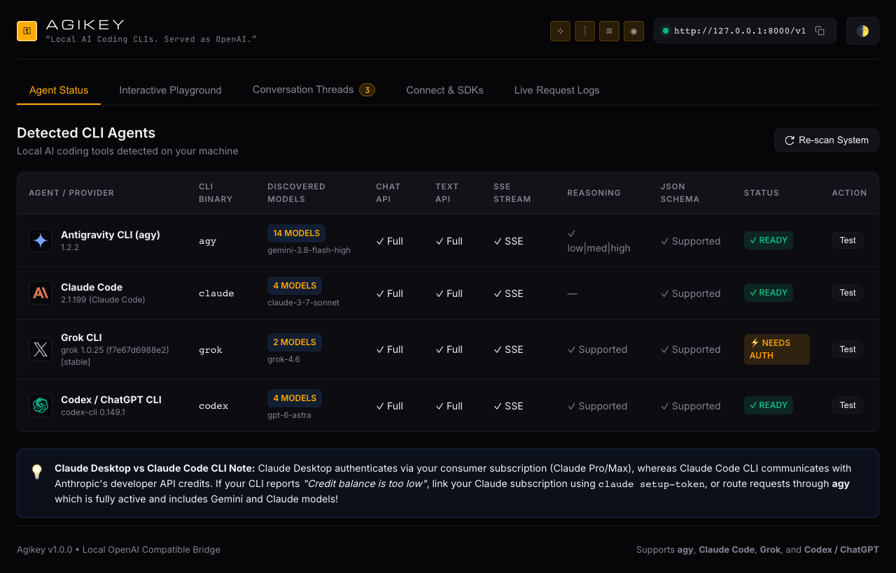

An API from
your AI
subscriptions.
Create an OpenAI-compatible API connected to Codex, Claude Code, Grok, agy, and more.
http://127.0.0.1:8000/v1→ YOUR APP
Claude Code → OpenAI-compatible text responses
Four connectors
out of the box.
Codex, Claude Code, Grok, and agy. Each connector is available through chat completions, text completions, and saved-conversation APIs, with JSON or SSE streaming responses.
Examples only. This page makes no calls to your agents. Your installed CLI and account determine model availability.
from openai import OpenAI
client = OpenAI(
base_url="http://127.0.0.1:8000/v1",
api_key="local",
)
response = client.chat.completions.create(
model="claude",
messages=[{"role": "user", "content": "Hello!"}],
)
print(response.choices[0].message.content)
See what’s
connected.
A local dashboard comes with the server. Check discovery, send a prompt, and pick up a saved conversation.
Illustrative dashboard captures. Provider names, model lists, and status vary by installation.

Make localhost
a little smarter.
Node.js 18+ and at least one installed, authenticated CLI. No runtime npm dependencies.
Explore the source ↗git clone https://github.com/lumpenspace/agikey.git
cd agikey
npm link
agikey discover
agikey serve
The npm package is prepared as agikey, with
agiary as an alias. Public npm publication is pending.